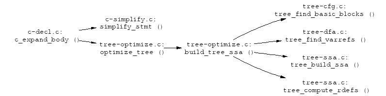

This work is part of the AST
optimization project. The goal is to build an optimization framework
for trees based on the Static Single Assignment (SSA) form [1]. The implementation currently lives in the
tree-ssa-20020619-branch branch.
Checkout the tree-ssa-20020619-branch branch
following the instructions found in the CVS documentation.
When posting to the development lists, please mark messages and patches with
[tree-ssa-branch] in the subject. As this is a branch, and not
the mainline, the usual maintainer rules do not apply. This branch is
maintained by Diego Novillo
<dnovillo@redhat.com>. Approval from the usual maintainers will be
needed when submitting patches from the branch onto the mainline.
While GCC trees contain sufficient information for implementing SSA, there are two major problems that make this difficult:
To address this problem we are adding a new simplified intermediate representation based on the existing trees. The IR, called SIMPLE, is a very simple C-like three-address language that looks pretty straightforward to analyze and keeps all the high-level attributes of data types. It was proposed by the McCAT project out of McGill University [2].
The data structures are the same trees used by GCC, but we impose rules on how the trees can be combined. For instance, the initial tree generation for the expression:
a = b + c - d;
generates a single tree for the whole assignment statement. The SIMPLE version of that expression generates 2 different trees:
t1 = b + c; a = t1 - d;
So, when examining expressions we can now assume that a
PLUS operation will always have exactly two operands
that are variables. This also exposes other opportunities like
finding common expressions to eliminate (although it might also
lead to code bloating, so we need to be careful). This new pass
was discussed at length on the GCC lists, starting with http://gcc.gnu.org/ml/gcc/2002-01/msg00082.html.
The simplification pass for the C front end is implemented in
c-simplify.c. To determine whether a tree is in SIMPLE form, use
the predicates defined in tree-simple.[ch].
The file c-pretty-print.c implements several debugging functions
that given a tree node, they print a C representation of the tree. The
output is not meant to be compilable, but it is of great help when
debugging transformations done by the transformation passes.
Having trees in SIMPLE form enables language-independent analysis and transformation passes. Currently, we are implementing an SSA pass based on M.J. Wolfe's Factored Use-Def (FUD) chains [3]. The graph below describes the process:
The front ends described in the graph are just an example. In general, any front end that can emit functions-as-trees can be converted to emit SIMPLE trees.
The tree SSA representation and related optimizers are enabled with the
-ftree-ssa switch. The conversion is a three step process driven
from tree-optimize.c:
c-simplify.c.tree-dfa.c.tree-cfg.c.
This implementation uses the same basic_block structure used by
the RTL optimizers. This allows us to share most of the existing CFG
code.tree-ssa.c.The partial call graph below describes the main entry points of the conversion process:

This is a loosely organized list of analyses and optimizations that are planned. Suggestions for other passes and volunteers to help finish the different passes are welcome.
Note that the descriptions in this list are grossly simplified. Detailed description of each transformation can be found in the literature.
dependence.c but it's not
used. We can adapt this work by keeping the dependence tester, but get
the information about array subscripts and loops from the Simple
representation.